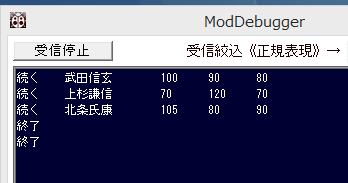

Lua側で複雑な入り組んだデータを定義し、これをScenarioModで取得する場合、
複雑なデータのまま、画用紙に書いてしまうと、SceanrioMod側の負担が高まります。
なぜなら、ScenarioModで簡単に画用紙から取得できるのは、「少数」もしくは「文字列」であり、
複雑なデータ構造となると、素のLuaの比較的複雑で取り回しにくいAPIを直接扱うことになるからです。
今回は、以下のようなデータが、個数不明のまま定義されたとしても、問題なくSceanrioModで取得する
ということを目指します。
以下のように対象となるtxtファイルを「天翔記フォルダ」に用意します。
local data_list = {
{['名前']="武田信玄" , ['政治']=100, ['戦闘']= 90, ['智謀']=80},
{['名前']="上杉謙信" , ['政治']=70, ['戦闘']=120, ['智謀']=70},
{['名前']="北条氏康" , ['政治']=105, ['戦闘']= 80, ['智謀']=90},
}
void 複雑なパラメータの取得() {
try {
// ファイル存在簡易チェック。win32api
if ( PathFileExists( "BushouData.txt" ) ) {
LUA::Do_ファイル("BushouData.txt");
}
} catch(...) {
デバッグ出力 << "LUAファイル実行エラー" << endl;
return; // このレベルでエラーはヤバイ。パラメタ読み取りはしない。
}
}
void カスタム::On_起動時() {
複雑なパラメータの取得()
}
先述のBushouData.txtのデータは、「テーブルのなかに、さらにテーブル」が入っており、入り組んでいますので、
画用紙に書かれているこのままの形だと、C++側で値を取得するのは、とても大変です。
そこで、Luaで、以下のような関数を作り、
「Get_グローバル数値」や「Get_グローバル文字列」で値を引き出せるような形で取れる準備をします。
dprintしてみると、その様子がわかります。
local data_list = {
{['名前']="武田信玄" , ['政治']=100, ['戦闘']= 90, ['智謀']=80},
{['名前']="上杉謙信" , ['政治']=70, ['戦闘']=120, ['智謀']=70},
{['名前']="北条氏康" , ['政治']=105, ['戦闘']= 80, ['智謀']=90},
}
-- とある ix 番目のデータを、平べったく値だけ並べて返す。
-- もし ix 番目がデータの終わりなら、'終了' という文字列を返す。
function GetNextDataList(ix)
-- ix番目のデータに別名「p」を付ける。(コピーではない、別名)
local p = data_list[ix]
if p then
-- luaは複数の値を並べて返すことが出来る。
return '続く', p['名前'], p['政治'], p['戦闘'], p['智謀']
else
return '終了'
end
end
dprint( GetNextDataList(1) )
dprint( GetNextDataList(2) )
dprint( GetNextDataList(3) )
dprint( GetNextDataList(4) )
dprint( GetNextDataList(5) )

さて、直接ベタ書きした部分は、 具体的なデータ数を指定せずとも、for ループにできるでしょう。
又、次のように 一端グローバル変数に受け取って画用紙へと書き 画用紙経由で取り扱うことが可能だと気づくでしょうか。
local data_list = {
{['名前']="武田信玄" , ['政治']=100, ['戦闘']= 90, ['智謀']=80},
{['名前']="上杉謙信" , ['政治']=70, ['戦闘']=120, ['智謀']=70},
{['名前']="北条氏康" , ['政治']=105, ['戦闘']= 80, ['智謀']=90},
}
function GetNextDataList(ix)
local p = data_list[ix]
if p then
return '続く', p['名前'], p['政治'], p['戦闘'], p['智謀']
else
return '終了'
end
end
for i=1, 10000 do
_is_end, _pname, _pgov, _pbat, _pint = GetNextDataList(i)
if _is_end == '終了' then
break;
else
dprint(_pname, _pgov, _pbat, _pint)
end
end
ということは、C++側から、この for ループのような処理をしてやれば、値を受け取れそうだ、ということがわかります。
local data_list = {
{['名前']="武田信玄" , ['政治']=100, ['戦闘']= 90, ['智謀']=80},
{['名前']="上杉謙信" , ['政治']=70, ['戦闘']=120, ['智謀']=70},
{['名前']="北条氏康" , ['政治']=105, ['戦闘']= 80, ['智謀']=90},
}
function GetNextDataList(ix)
local p = data_list[ix]
if p then
return '続く', p['名前'], p['政治'], p['戦闘'], p['智謀']
else
return '終了'
end
end
struct myパラメタ型 {
int 番号;
string 名前;
int 政治;
int 戦闘;
int 智謀;
};
vector<myパラメタ型> v_data_list;
void 複雑なパラメータの取得() {
try {
// ファイル存在簡易チェック。win32api
if ( PathFileExists( "BushouData.txt" ) ) {
LUA::Do_ファイル("BushouData.txt");
}
} catch(...) {
デバッグ出力 << "LUAファイル実行エラー" << endl;
return; // このレベルでエラーはヤバイ。パラメタ読み取りはしない。
}
// luaの配列の添え字は「1」からスタートする。「i」を増やしながら無限ループ
for (int i=1; true; i++) {
// 1人分読み取って、画用紙へと受け取る。
try {
stringstream cmd;
cmd << "_is_end, _pname, _pgov, _pbat, _pint = GetNextDataList(" << i << ")";
LUA::Do_コマンド(cmd.str()); // _ret_en, _pname, ... というように、ScenarioMod側で好きな変数を指定して、画用紙へと書く。
} catch(...) {
break; // 関数実行のエラーがあれば、読み取り終了。forを抜ける
}
// もう「データ読み取りが既に終了」というシグナルが返ってきてるようなら、forループを抜ける
try {
// リストが終わりというシグナルが返ってきたなら、読み取り終了。forを抜ける
if ( LUA::Get_グローバル文字列("_is_end") == "終了" ) {
break; // 読み取り終了
}
} catch(...) {
// _is_endの処理でエラーが起きるようでは、無限ループに陥る可能性がある。
// パラメタ読み取りを即座に終了する。
return;
}
// 画用紙から読み取って、C++内の変数へと追加保存する。
try {
// 画用紙からの現在の値の読み取り。
myパラメタ型 data;
data.番号 = i;
data.名前 = LUA::Get_グローバル文字列("_pname");
data.政治 = (int)LUA::Get_グローバル数値("_pgov");
data.戦闘 = (int)LUA::Get_グローバル数値("_pbat");
data.智謀 = (int)LUA::Get_グローバル数値("_pint");
// ScenarioMod側で用意したパラメタリストへと追加する。
v_data_list.push_back(data);
} catch(...) {
// 例外が起きてもとりあえずスルーして次のデータを読み込む。
}
}
}
void カスタム::On_起動時() {
複雑なパラメータの取得();
for each(myパラメタ型 data in v_data_list) {
デバッグ出力 << data.番号 << endl;
デバッグ出力 << data.名前 << endl;
デバッグ出力 << data.政治 << endl;
デバッグ出力 << data.戦闘 << endl;
デバッグ出力 << data.智謀 << endl;
デバッグ出力 << string(20, '-') << endl;
}
}